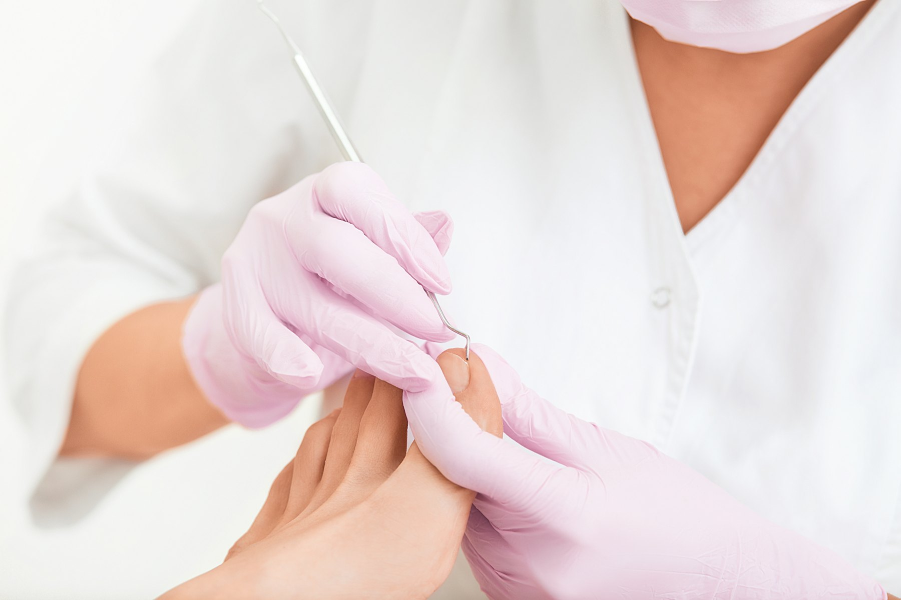
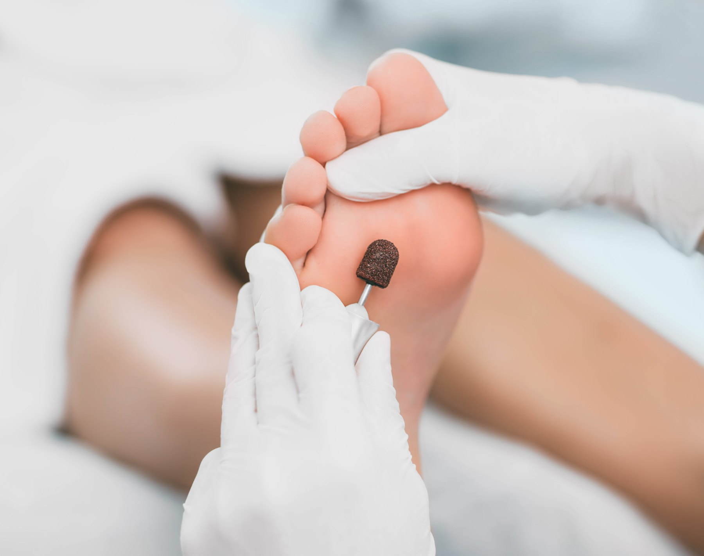

Clinica del pie cermeño Podólogos Murcia



Podología
Sobre nosotros
Clínica de podología en Murcia especializada en el diagnóstico y tratamiento de las afecciones del pie. Nuestro equipo de podólogos evalúa cada caso de forma individual para ofrecerte el tratamiento más adecuado.
Llevamos más de 35 años cuidando de los pies de nuestros pacientes en pleno centro de Murcia, en la Gran Vía.
Desde tu primera visita, nos implicamos en tu salud para que te sientas atendido, escuchado y en buenas manos.


Servicios
Tratamientos de podología en Murcia
Diagnóstico y tratamiento
Exploración completa y tratamiento de uñas encarnadas, callosidades, papilomas y verrugas plantares.
Más información →Estudio de la marcha
Análisis en podoscopio y de la pisada para localizar el origen real del dolor.
Más información →Pie infantil y geriátrico
Seguimiento del pie en crecimiento y cuidados específicos para el pie de la persona mayor.
Más información →Prótesis y plantillas
Plantillas y ortesis de silicona confeccionadas a medida en la propia clínica.
Más información →Pie diabético
Revisión periódica, control del riesgo y prevención de lesiones y úlceras.
Más información →Láser de diodo
Tratamiento de hongos en la uña y lesiones, sin dolor y sin cirugía.
Más información →Más de 35 años cuidando los pies de Murcia
Clínica del Pie Cermeño
Casos clínicos
Publicaciones y Redes sociales
Juanete
Qué es el hallux valgus, por qué duele y cómo lo tratamos sin cirugía.
Ver caso →Jesús Abandonado
Nuestra atención podológica solidaria en Jesús Abandonado de Murcia.
Ver caso →Uña encarnada
Cuándo acudir al podólogo y cómo resolvemos el dolor desde la primera visita.
Ver caso →Prevención
Cómo evitar que las uñas se claven: corte correcto, calzado y cuándo pedir cita.
Ver caso →Callos
Por qué salen, por qué duelen y cómo los eliminamos sin dolor.
Ver caso →Preguntas frecuentes
Lo que más nos preguntan en consulta
¿Cuándo debo ir al podólogo por una uña encarnada?
En cuanto notes dolor, enrojecimiento o inflamación en el borde de la uña. Tratarla pronto evita que se infecte y que el problema se repita.
¿Por qué me duele el talón al levantarme?
Suele deberse a una fascitis plantar o a una mala pisada. Con un estudio de la marcha localizamos la causa y, si hace falta, pautamos plantillas a medida.
¿Qué problemas del pie tratáis?
Tratamos todas las patologías del pie: uñas encarnadas, callos y durezas, juanetes, papilomas y verrugas plantares, hongos en las uñas, dolor al caminar, pie diabético, pie infantil y pie de la persona mayor, entre muchas otras. Si tienes cualquier molestia en los pies, consúltanos.
¿Hacéis plantillas a medida?
Sí. Tras un estudio de la marcha y de la pisada, confeccionamos plantillas y ortesis de silicona a medida en la propia clínica.
¿Cómo se tratan los hongos en las uñas?
Con láser de diodo: un tratamiento sin dolor y sin cirugía.
¿Cada cuánto debe revisarse el pie una persona con diabetes?
Recomendamos revisiones periódicas para controlar el riesgo y prevenir lesiones y úlceras. En consulta te indicamos la frecuencia adecuada según tu caso.
Contacto
Teléfono, horario y ubicación
Pide tu cita
968 23 19 64 Llamar ahoraLunes a jueves
9:30 – 14:00
17:00 – 21:00
Viernes
9:30 – 14:00
Sábado y domingo
Cerrado
Clinica ubicada en el Centro de Murcia
Plaza de la Fuensanta 3, Gran Vía · Entresuelo izquierda
30008 Murcia, España
Dirección copiada